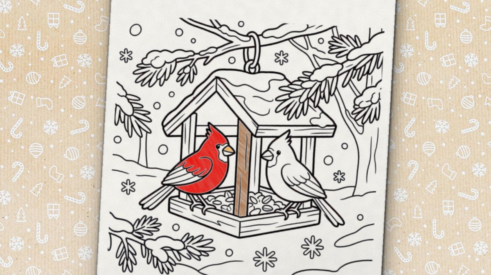

November 20, 2026 · By Pixel Punk Studio
The grandkids are over, the crayons are out, and you sit down to color with them. Ten minutes later you are filling in a cartoon puppy that holds no interest for you, or your grandchild has abandoned your detailed mandala in tears. The trouble isn't coloring, it's the page. Grandparents and grandchildren don't need the same picture to enjoy the same hour. They need pages that suit each of them, and a reason to talk across the table.
What each age can comfortably color
- Ages 3 to 5: one big subject, thick outlines, very few small spaces. They color for a few minutes and they go outside the lines, which is part of it.
- Ages 6 to 10: simple scenes with a background to fill in. They can stay inside bigger shapes and like a page with something to discover or read.
- Grandparents: bold lines and open spaces are easier on tired eyes and less steady hands, but the subject should still feel like it was made for a grown-up: a garden bird, a snowy street, a memory from long ago.
Notice what they share: bold lines. That is the good news. A bold and easy adult page and a good kids' page are closer than they look, and the real difference is the subject.
How to pick pages you will both enjoy
- Choose by theme, not by one single page. You color a cardinal at the bird feeder, your grandchild colors a ladybug in the garden. Different pages, same outdoors.
- Check the smallest space. If a young child's crayon can't fit in it, skip the page for them, however pretty it is.
- Look for a story to talk about. A kitten in a gift box or a television with rabbit ears starts a conversation; a pattern doesn't.
- Let the child pick yours, and you pick theirs. It takes ten seconds and everyone cares about the result.
- Keep it short. Choose something a child can finish in one sitting, and don't mind if your own page lasts until the next visit.
- Print a spare. Mistakes matter less when there is a second copy waiting.
6 ways to color together
- Swap halfway. Trade pages at the timer and finish each other's picture.
- Same page, two palettes. Color two copies of a page, one in true colors and one in silly colors, then hang them side by side.
- The color boss. The child chooses the color of each part of your page, and you do the careful coloring.
- Guess the fact. If your page comes with a fun fact, read the first half aloud and let them guess the rest.
- "When I was little..." Pick a page with an old telephone or a bag of marbles, and tell them how it worked. They will have questions.
- A two-generation gallery. Tape the finished pages side by side on the fridge, and sign and date each one. You will want to keep them.
Set up the table for both of you
- Good light from the side, a daylight window or a lamp, so nobody colors in their own shadow.
- Two sets of tools: chunky crayons for small hands, sharpened colored pencils or thick barrel pencils for you.
- Side by side, not face to face, so you can see and admire each other's pages.
- A clipboard or firm book under the page for anyone coloring from an armchair.
- Print on thicker paper if you have it, so the page survives the journey home and the fridge door.
Free pages to print and try
Start with three free pages from our books: the cardinals at the bird feeder and the 1950s Christmas TV for the grown-up, and the smiling ladybug for little hands. If they are a hit, Cozy Christmas Coloring Book and Nostalgic Christmas Coloring Book each have 50 bold and easy scenes, the second with a memory question beside every page, which is made for talking with grandchildren. For the kids, Cute Bug Days has 50 bugs to color and Cute Farm Days has 50 farm animals, each with a fun fact to read together.